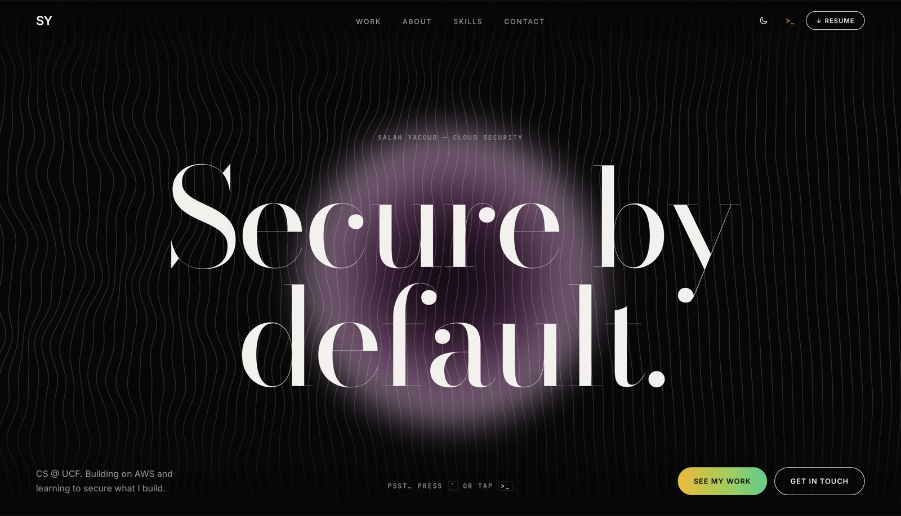

01Overview
This site is my entry for the AWS Builder Center student portfolio hackathon. It's built to feel cinematic while staying fast and easy to navigate. There's a hidden way in for curious visitors.
02What I built
- The hero line field: a canvas of flowing lines that bulge around your cursor, with a purple orb that follows it. The lines fade out at the edges.
- salah.sec terminal: a working in-browser terminal (press ` or tap
>_) with commands likehelp,whoamiandls projects. - A capture-the-flag challenge: visitors find a hidden encoded file and decode it (base64 → ROT13) to recover the flag. The site stores only a hash of the answer, so the flag can't be read from the source.
- Deployment: the code lives on GitHub and deploys automatically through AWS Amplify Hosting on every push.
03Security
- I directed an AI coding agent (Claude Code, with the AWS Agent Toolkit) that had access to my AWS account. That access goes through a dedicated IAM user protected with MFA, not the root account.
- I started on root to save time, then switched. That's the same lesson GuardDuty taught me on my S3 project.
- I reviewed every file before pushing to a public repo to make sure no secrets were included.
04Challenges
My first attempt at a full redesign was one giant prompt, and it broke the site. I rolled back with git and rebuilt in small steps (layout, then the line field, then interactions), committing after each one. That's how it finally came together.
05What I learned
- How to direct an AI agent well: specific instructions, small steps, review everything and keep a rollback point.
- How Amplify packages what I built by hand on my S3 project (storage, CDN, HTTPS) into a managed workflow.
06Gallery
